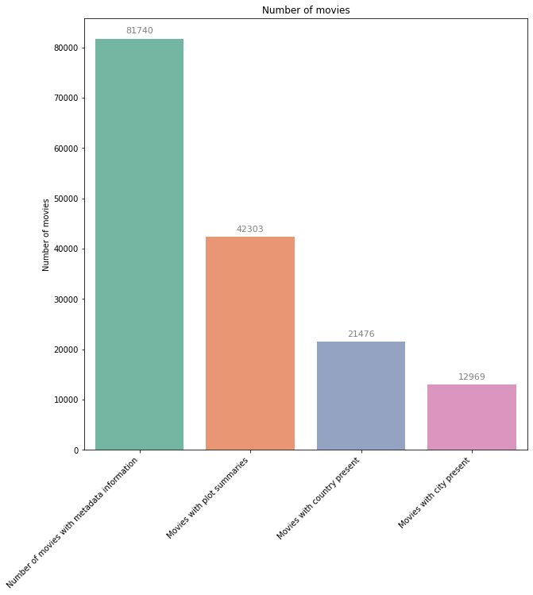

Introduction
Welcome to "Uncovering Biases in Cinema," where we embark on a cinematic odyssey to investigate the subtle and overt biases that shape our understanding of cities, countries, and their histories. Our investigation peels back the layers of cinematic storytelling to reveal how film can both reflect and distort the reality of our world.
Our data distribution
Before delving deep into the analysis we must first take a good look at the data. The data we used is the CMU Movie Summary Corpus, which is a collection of 42,306 movie summaries. We have expanded this dataset by using LLMs to generate the locations depicted in the story and the characters alignment but also nationality.
Our preprocessing only identified 21,000 movies with a country present and around 13,000 with a city present. Even with the lower numbers we still have a lot of data to work with.
Unsurprisingly, the distribution of movies in countries is not uniform. Most of the movies are from the United States, followed by the United Kingdom and India. This will be important to keep in mind when analyzing the data and to account for the bias that might be present.
Stereotypes and Cityscapes in Cinema
Unveiling the canvas of urban landscapes in film, we analyze the interplay of genre and geography. Does cinema pigeonhole cities into certain thematic roles? We dissect the patterns of representation that have come to define the cinematic identities of places like Paris and New York.
Rewriting History Through the Camera Lens
How does cinema choose to remember—or forget—historical events? This segment explores the selective lens through which films narrate history, comparing their retellings with the annals of actual events.
Cultural Origins and Their Impact on Film Narrative
The origin of a film often colors its narrative. Here we delve into how a movie's homeland influences its portrayal of friends and foes, and what this reveals about national self-perception and otherness.
Temporal Contexts in Cinema
In this section, we travel through time with cinema, examining how different eras have distinct cinematic signatures. We ponder whether the era in which a film is made influences its portrayal of certain cities, countries, and events.
Characterizing Villains: A Cross-Cultural Examination
Villains often carry the weight of cultural stereotypes. We scrutinize how different cultures, from Eastern Europe to Hollywood, craft their cinematic villains and what implications this has on global perceptions.
The Geographical Compass of Film Ratings
Is there a correlation between the geographical setting of a film and its critical acclaim or box office success? We analyze data to determine if the backdrop of a story influences its reception and ratings.
Mirroring Reality: The Accuracy of On-Screen Representation
Our final analytical lens focuses on the depiction of human characteristics such as names, occupations, and demographics. How well does cinema mirror the rich tapestry of human diversity?
Conclusion
As our cinematic journey concludes, we reflect on the power of film to influence, inform, and inspire. Our findings offer a mosaic of insights into how cinema, across eras and origins, crafts our collective consciousness. By understanding these biases, we become more informed viewers, able to discern the line where art diverges from reality, and appreciate the stories told within their historical and cultural context. Also Tanguy rocksss